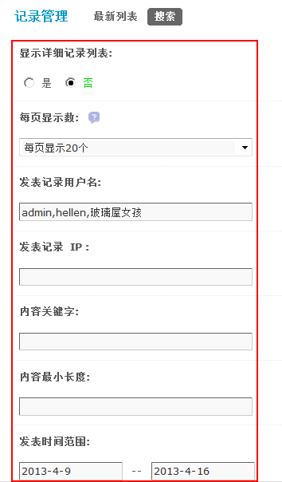
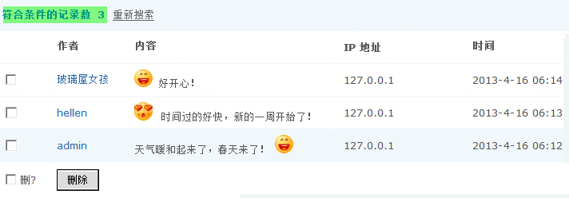

记录管理
通过记录管理功能，站长可以方便的管理用户在个人空间所发表的记录内容，并且连同对应的回复一同删除。
一、按指定条件进行搜索
操作路径：【后台】=>【内容】=>【记录管理】
管理员可以设置搜索条件，划定搜索范围，如下图所示：
1、显示详细记录列表： 选择“是”，则在搜索结果中列出符合条件的记录详细信息；选择“否”，则只会在结果中显示出符合条件的记录数量。
选择“是”的效果如下：
2、每页显示数：每页显示多少条记录。
3、发表记录用户名：按发表记录的用户进行搜索，若有多个，用‘,’分割。
4、发表记录IP：按照发表记录的IP地址进行搜索，可使用通配符’*’对某网段进行筛选，慎用！
5、内容关键字：按照内容中包含的关键字进行搜索。多个关键字用’,’分割，关键字可以使用限定符 {x} 以限定相邻两字符间可忽略的文字，x 是忽略字符的个数，如 “a{1}s{2}s”(不含引号) 可以搜索到 “ass” 也可搜索到 “axsxs” 和 “axsxxs” 等等。
6、内容最小长度：按照记录内容的最小长度进行搜索，开启后会加重服务器负担。
7、发表时间范围：格式 yyyy-mm-dd，不限制请输入0。
点击‘提交’后即可进行搜索。
二、删除筛选后的记录
1、若选择了‘显示详细记录列表’，则可以看到所选择的记录的详细信息，此时可以勾选相应的复选框决定是否删除。
2、可以单独删除一个或者几个，也可以全部批量删除。
3、点击‘提交’即可删除筛选的所有记录。
三、最新列表
最新列表中将列出近期发布的最新的记录，可以不用搜索直接在这里进行管理操作。